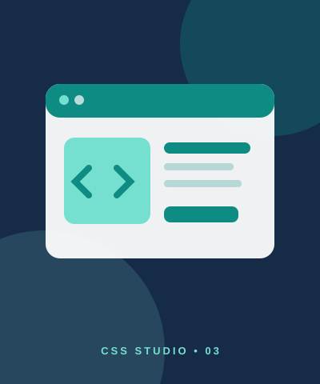

Front-end Developer

ROLE 01
Chuyên xây dựng giao diện trực quan, đồng bộ và dễ sử dụng cho khách hàng.
Biến bài positioning và z-index thành bốn thẻ nhân vật nhiều lớp, không phải ghép cả ảnh mẫu vào trang.
Bốn vai trò trong hành trình phát triển một ứng dụng số.

Chuyên xây dựng giao diện trực quan, đồng bộ và dễ sử dụng cho khách hàng.
Đưa sản phẩm số vào trải nghiệm di động, chú trọng tốc độ và thao tác chạm.
Kết nối giao diện với dữ liệu và logic phía sau để vận hành ứng dụng.
Kiểm tra chất lượng sản phẩm, tìm lỗi và nâng cao độ tin cậy trước khi phát hành.
.hero-item { position: relative; }
.hero-desc { position: absolute; left: 12px; right: 12px; bottom: 12px; z-index: 2; }
.hero-image img { display: block; width: 100%; height: 265px; object-fit: cover; }
Nhóm hero nằm trong container giới hạn
max-width: 960px
. Vùng description có nền bán trong suốt và đặt phía trên ảnh. Ở màn hình nhỏ, bố cục chuyển 2 và 1 cột.